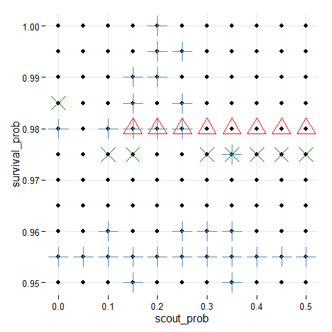
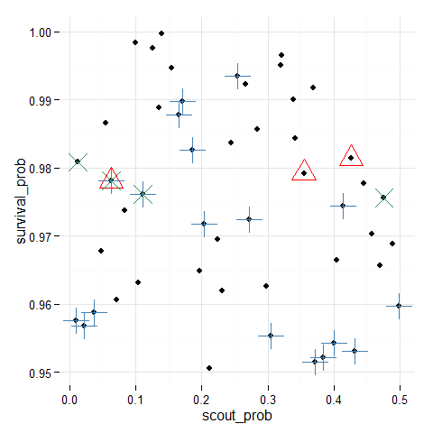
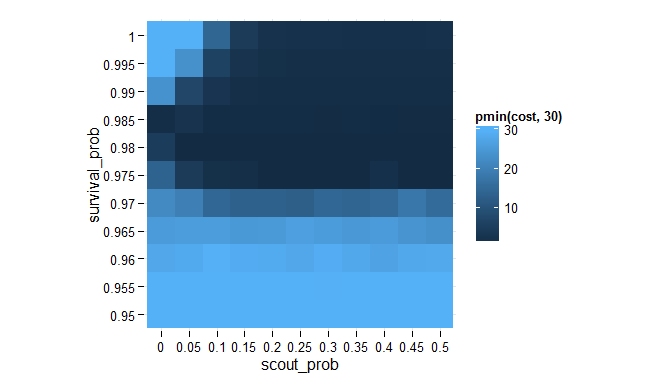
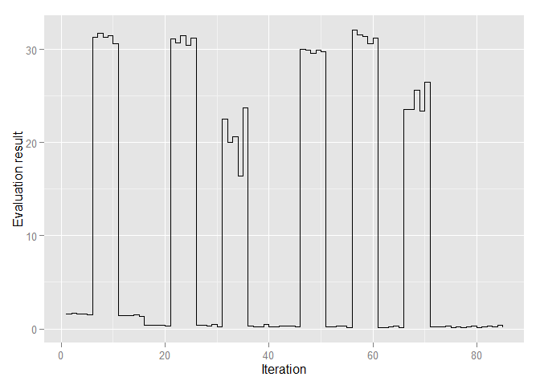
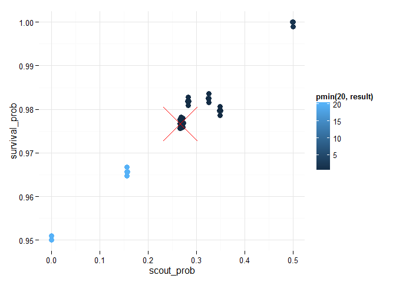

Define and run NetLogo experiments in R
The goal of nlexperiment is to make exploring NetLogo models with R as simple as possible while keeping advanced functionalities available to advanced users. It uses RNetLogo package (Thiele 2014) as an interface to NetLogo.
Installation
library(devtools)
install_github("bergant/nlexperiment")
Simple experiment with fire
This sample experiment with NetLogo Fire model (Wilensky 1997) demonstrates how to create and run minimal experiment. It runs the model with three parameter values (forest density) and exports final NetLogo views to image files:
library(nlexperiment)
# Set the path to your NetLogo instalation
nl_netlogo_path("c:/Program Files (x86)/NetLogo 5.2.0/")
# Create NetLogo experiment object
experiment <- nl_experiment(
model_file = file.path(nl_netlogo_path(),
"models/Sample Models/Earth Science/Fire.nlogo"),
while_condition = "any? turtles",
param_values = list(density = c(57, 59, 61)),
random_seed = 1,
export_view = TRUE
)Run the experiment:
result <- nl_run(experiment) Find paths to the exported view image files in result$export or just display them by calling nl_show_views_grid function:
library(ggplot2)
nl_show_views_grid(result, "density")
Observations per each simulation step
From statistical point of view, the interesting part of experiment is getting some quantitative information. This sample demonstrates how to set measures for each simulation step.
experiment <- nl_experiment(
model_file = file.path(nl_netlogo_path(),
"models/Sample Models/Earth Science/Fire.nlogo"),
while_condition = "any? turtles",
param_values = list(density = c(57, 59, 61)),
random_seed = 1,
step_measures = measures(
percent_burned = "(burned-trees / initial-trees) * 100"
)
)Run the experiment:
result <- nl_run(experiment)Plot of burned forest as a function of time for different forest densities:
# get the observation data for step measures
dat <- nl_get_result(result, type = "step")
# plot the observations
library(ggplot2)
ggplot(dat, mapping = aes(x = step_id, y = percent_burned)) +
geom_step() +
facet_grid(. ~ density) +
labs(y = "Percent burned", x = "Iteration")
Note: values run_id and step_id are included in the results$step by default.
Parameter values are included only by reference to parameter_set_id. The
function nl_get_result joins parameter sets to observation data.
Observations per each simulation run
In this example
- two measures per simulation run are defined (values are reported at the end of each simulation run),
- the model will be run repetedly
30times for every parameter value - and the model is running with
paralleloption (to save some time)
experiment <- nl_experiment(
model_file = file.path(nl_netlogo_path(),
"models/Sample Models/Earth Science/Fire.nlogo"),
while_condition = "any? turtles",
repetitions = 30,
run_measures = measures(
percent_burned = "(burned-trees / initial-trees) * 100",
progress = "max [pxcor] of patches with [pcolor > 0 and pcolor < 55]"
),
param_values = list(
density = seq(from = 55, to = 62, by = 1)
)
)Run the experiment with parallel option:
result <- nl_run(experiment, parallel = TRUE)
# Join observations with parameter set values:
dat <- nl_get_run_result(result, add_parameters = TRUE)Plot the results - percent burned as a function of density:
# plot percent burned by density
library(ggplot2)
ggplot(dat, mapping = aes(x = factor(density), y = percent_burned) ) +
geom_violin() +
#geom_jitter(position = position_jitter(width = .1), alpha = 0.3) +
labs(x = "Forest density", y = "Percent burned")
Fire advances from left to right. It is interesting to observe final fire position (left border = 0 and right = 1) as a function of density.
ggplot(dat, mapping = aes(x = factor(density), y = progress/250 + 0.5) ) +
geom_jitter(position = position_jitter(width = .1), alpha = 0.3) +
theme_minimal() +
labs(x = "Forest density", y = "Fire progress")
Reading agent variables
While run_measures (see Observation per run) is good enough for aggregate measures, sometimes we need values for each agent individually.
Example shows usage of agents_after parameter to get vertices from Preferential attachment
model.
experiment <- nl_experiment(
model_file = file.path(nl_netlogo_path(),
"models/Sample models/Networks/Preferential attachment.nlogo"),
iterations = 50,
agents_after = list(
vertices = agent_set(
vars = c("who", "xcor", "ycor"),
agents = "turtles"),
edges = agent_set(
vars = c(e1 = "[who] of end1", e2 ="[who] of end2"),
agents = "links")
),
repetitions = 2,
random_seed = c(42, 69)
)Note:
- Here random seed is defined as a vector. It is applied to each repetition respectively.
- Variables in agent set may or may not include variable names.
- Element
agents_beforeis analogous tpagents_after- it just gets the data before model runs.)
Run experiment
result <- nl_run(experiment)
#> Warning: Parameter sets not defined. Using default parametersShow graph by using igraph package:
library(igraph, quietly = TRUE, warn.conflicts = FALSE)
par(mfrow=c(1,2), mai=c(0,0,0,0))
for(i in 1:experiment$run_options$repetitions) {
g_edges <- subset(result$agents_after$edges, run_id == i)
g1 <- graph.data.frame(g_edges, directed = FALSE)
V(g1)$size <- sqrt(degree(g1))*6
V(g1)$label <- ifelse(as.numeric(V(g1)$name) < 4, as.numeric(V(g1)$name), NA)
plot.igraph(g1, margin = 0,
vertex.label.font = V(g1)$size * 0.07,
vertex.label.color = "white",
vertex.color="darkseagreen4",
edge.color = "gray",
vertex.frame.color="#ffffff",
edge.curved=.1
)
}
Note:
- Data frame
result$agents_after$edgesincludes variables from all simulation runs. - Use
param_space_idand/orrun_idcolumns to subset individual run or parameter combination
Reading patches
Getting patches information is analogous to reading agents' data from NetLogo model:
experiment2 <- nl_experiment(
model_file = file.path(nl_netlogo_path(),
"models/Sample Models/Biology/Fur.nlogo"),
iterations = 20,
param_values = list(
ratio = c(0.3, 0.35, 0.4, 0.45)
),
patches_after = list(
patches = patch_set(
vars = c("pxcor", "pycor", "pcolor"),
patches = "patches"
)
),
random_seed = 2
)
result2 <- nl_run(experiment2)
nl_show_patches(result2, x_param = "ratio") +
ggplot2::scale_fill_manual(values = c("black","white"))
Simple parameter sets definition
The following example is using Ant model (Wilensky 1997) to show simple parameter sets definition and parameter mapping.
experiment <- nl_experiment(
model_file = file.path(nl_netlogo_path(),
"models/Sample Models/Biology/Ants.nlogo"),
iterations = 150,
step_measures = measures(
pile1 = "sum [food] of patches with [pcolor = cyan]",
pile2 = "sum [food] of patches with [pcolor = sky]",
pile3 = "sum [food] of patches with [pcolor = blue]"
),
param_values = list(
population = 125,
diffusion_rate = c(50, 70),
evaporation_rate = c(5, 10, 15)
),
mapping = c(
diffusion_rate = "diffusion-rate",
evaporation_rate = "evaporation-rate"
),
random_seed = 2,
export_view = TRUE
)Note:
- When parameters are defined as a list of value vecors, parameter sets are constructed as combination of all possible parameter value combination
- It is not required to include all parameters in mapping. Variable
populationis used as is. - NetLogo identifiers may include some ASCII characters
(?=*!<>:#+/%$^'&-)that makes the R part of data manipulation rather uncomfortable. - Element
mappingmapsdifussion_rateandevaporation_ratenames to NetLogo variablesdiffusion-rateandevaporation-rate.
Run experiment
results <- nl_run(experiment) Show views
nl_show_views_grid(results, "evaporation_rate", "diffusion_rate")
Show remaining food by difussion rate and evaporation rate for all food piles
library(tidyr)
dat <- nl_get_step_result(results)
dat <- tidyr::gather(dat, pile, value, pile1, pile2, pile3)
library(ggplot2)
ggplot(dat, aes(x = step_id, y = value, color = pile) ) +
geom_line() +
facet_grid(diffusion_rate ~ evaporation_rate)
Parameter space mapping
The following example is using NetLogo Fur model (Wilensky 2003) to show explicit definition of parameter sets and parameter mapping.
There are 5 parameters in the NetLogo Fur model:
-
ratio outer-radius-yinner-radius-youter-radius-xinner-radius-x
But considering constraints and model symmetry we can reduce the parameters to:
-
ratio(the inhibitor concentration parameter) -
radius_diff(the difference between x and y radius) and -
gap(distance between inner and outer ellipse)
(for simplicity let's keep the gap between the circles constant):
experiment <- nl_experiment(
model_file = file.path(nl_netlogo_path(),
"models/Sample Models/Biology/Fur.nlogo"),
iterations = 20,
param_values = { # Parameter sets:
param_sets <- expand.grid( # all combinations of
gap = 3, # gap, ratio and ry- rx
radius_diff = seq(0, 2, by = 0.5),
ratio = seq(0.30, 0.65, by = 0.05)
)
transform(param_sets, # Transform to NetLogo
inner_radius_x = 3, # variables
outer_radius_x = 3 + gap,
inner_radius_y = 3 + radius_diff,
outer_radius_y = 3 + radius_diff + gap
)
},
mapping = c(
gap = "",
radius_diff = "",
inner_radius_x = "inner-radius-x",
outer_radius_x = "outer-radius-x",
inner_radius_y = "inner-radius-y",
outer_radius_y = "outer-radius-y"
),
patches_after = list(
patches = patch_set(
vars = c("pxcor", "pycor", "pcolor"),
patches = "patches"
)
),
random_seed = 3
)Note:
-
Element
param_valuesis set by a data frame with explicit parameter sets - Variables
gapandradius_diffmust be mapped to empty string (not NetLogo variables).
Run experiment
result <- nl_run(experiment, parallel = TRUE, max_cores = 3) Show resulting fur patterns:
library(ggplot2)
nl_show_patches(result, x_param = "ratio", y_param = "radius_diff") +
scale_fill_manual(values = c("black","white")) +
labs(y=expression(radius[y] - radius[x]), title = "Fur patterns (gap = 3)")
Categorical criteria function
This example uses NetLogo Hoopoes model from Railsback & Grimm (2011). Here the approach is the same as in the Thiele, Kurth & Grimm (2014) except using the nlexperiment framework instead of original R scripts. See Factorial design and Latin hypercube sampling chapters in the article.
Define an experiment with evaluation criteria
abundance, variation and vacancy (see eval_criteria element)
and categorical boolean criteria based on satisfactory ranges (see eval_mutate):
experiment <- nl_experiment(
model_file =
system.file("netlogo_models/SM2_Hoopoes.nlogo", package = "nlexperiment"),
setup_commands = c("setup", "repeat 24 [go]"), # 2 years of warming-up
go_command = "repeat 12 [go]", # iteration is per year
iterations = 20, # run for 20 years
repetitions = 10, # repeat simulation 10 times
param_values = list( # "full factor design"
scout_prob = seq(from = 0.00, to = 0.50, by = 0.05),
survival_prob = seq(from = 0.950, to = 1.000, by = 0.005)
),
mapping = c( # map NetLogo variables
scout_prob = "scout-prob",
survival_prob = "survival-prob"
),
step_measures = measures( # NetLogo reporters per step
abund = "month-11-count",
alpha = "month-11-alpha",
patches_count = "count patches"
),
eval_criteria = criteria( # evaluation per each run
abundance = mean(step$abund),
variation = sd(step$abund),
vacancy = mean(step$alpha / step$patches_count)
),
eval_aggregate_fun = mean, # mean value (10 repetitions)
eval_mutate = criteria( # categorical criteria
c_abundance = abundance > 115 & abundance < 135,
c_variation = variation > 10 & variation < 15,
c_vacancy = vacancy > 0.15 & vacancy < 0.30
)
)Note:
- The iteration is set to 12 times calling
goprocedure (1 iteration step = 12 NetLogo ticks) - When using list of parameter values, full parameter set is evaluated
- Criteria function receives all the results from model run and returns numerical vector
- Results from criteria function are aggregated by parameter sets over 10 repetitions
- Additionally categorical criteria is defined with ranges
Run experiment:
result <- nl_run(experiment, parallel = TRUE)
# get the data (criteria)
dat <- nl_get_result(result, type = "criteria") Returned data frame includes parameter sets with evaluation criteria:
str(dat)
#> 'data.frame': 121 obs. of 9 variables:
#> $ scout_prob : num 0 0.05 0.1 0.15 0.2 0.25 0.3 0.35 0.4 0.45 ...
#> $ survival_prob: num 0.95 0.95 0.95 0.95 0.95 0.95 0.95 0.95 0.95 0.95 ...
#> $ param_set_id : int 1 2 3 4 5 6 7 8 9 10 ...
#> $ abundance : num 4.67 4.46 5.08 6.18 5.35 ...
#> $ variation : num 9.15 8.15 9.67 11.12 9.58 ...
#> $ vacancy : num 0.981 0.98 0.98 0.966 0.976 ...
#> $ c_abundance : logi FALSE FALSE FALSE FALSE FALSE FALSE ...
#> $ c_variation : logi FALSE FALSE FALSE TRUE FALSE FALSE ...
#> $ c_vacancy : logi FALSE FALSE FALSE FALSE FALSE FALSE ...Plot categorical criteria on the model parameter space:
library(ggplot2)
ggplot(dat, aes(x = scout_prob, y = survival_prob)) +
geom_point() +
geom_point(data = subset(dat, c_abundance), color = "red", size = 7, shape = 2) +
geom_point(data = subset(dat, c_variation), color = "steelblue", size = 7, shape = 3) +
geom_point(data = subset(dat, c_vacancy), color = "darkgreen", size = 7, shape = 4) +
theme_minimal()
Instead of exploring parameter space with (full) factorial design we can use sampling methods. Below is an example with latin hypercube sampling from tgp package:
# use Latin Hypercube sampling to sample 50 parameter sets
library(tgp)
param_sets <- lhs(n=50, rect=matrix(c(0.0, 0.95, 0.5, 1.0), 2))
param_sets <- setNames(as.data.frame(param_sets), c("scout_prob", "survival_prob")) To change only parameter sets use nl_set_param_values
instead of repeating all experiment definitions with nl_experiment:
# change parameters of existing experiment
experiment <- nl_set_param_values( experiment,
param_values = param_sets
)Run the model with new parameters:
result2 <- nl_run(experiment, parallel = TRUE)
# get the data (criteria)
dat2 <- nl_get_result(result2, type = "criteria")ggplot(dat2, aes(x = scout_prob, y = survival_prob)) +
geom_point() +
geom_point(data = subset(dat2, c_abundance), color = "red", size = 7, shape = 2) +
geom_point(data = subset(dat2, c_variation), color = "steelblue", size = 7, shape = 3) +
geom_point(data = subset(dat2, c_vacancy), color = "seagreen", size = 7, shape = 4) +
theme_minimal()
Best-fit criteria function
As in Thiele, Kurth & Grimm (2014) define general cost function which is 0 when criteria are met and > 0 outside acceptable ranges:
cond_cost_function <- function(value, minval, maxval) {
# squared relative deviation if value outside accepted range
ifelse(
minval > value | value > maxval,
ret <- ((mean(minval,maxval) - value) / mean(minval,maxval))^2,
0
)
}Note: the function can use a vector in value attribute
The rest is analogous to the previous example (categorical criteria) except
when eval_mutate defines different criteria:
experiment <- nl_experiment(
model_file =
system.file("netlogo_models/SM2_Hoopoes.nlogo", package = "nlexperiment"),
setup_commands = c("setup", "repeat 24 [go]"), # 2 years of warming-up
go_command = "repeat 12 [go]", # iteration is per year
iterations = 20, # run for 20 years
repetitions = 10, # repeat simulation 10 times
param_values = list( # "full factor design"
scout_prob = seq(from = 0.00, to = 0.50, by = 0.05),
survival_prob = seq(from = 0.950, to = 1.000, by = 0.005)
),
mapping = c( # map NetLogo variables
scout_prob = "scout-prob",
survival_prob = "survival-prob"
),
step_measures = measures( # NetLogo reporters per step
abund = "month-11-count",
alpha = "month-11-alpha",
patches_count = "count patches"
),
eval_criteria = criteria( # evaluation per each run
abundance = mean(step$abund),
variation = sd(step$abund),
vacancy = mean(step$alpha / step$patches_count)
),
eval_aggregate_fun = mean, # mean value (10 repetitions)
eval_mutate = criteria( # add categorical values
cost =
cond_cost_function(abundance, 115, 135) +
cond_cost_function(variation, 10, 15) +
cond_cost_function(vacancy, 0.15, 0.30)
)
)Run experiment:
result <- nl_run(experiment, parallel = TRUE)
# get the data (criteria)
dat <- nl_get_result(result, type = "criteria") Plot evaluation criteria on the model parameter space:
library(ggplot2)
ggplot(dat , aes(x = factor(scout_prob), y = factor(survival_prob), fill = pmin(cost, 30))) +
geom_tile() + theme_minimal() + labs(x = "scout_prob", y= "survival_prob") +
coord_fixed()
Parameter fitting and optimization / L-BFGS-B
Using experiment definition from previous chapter: best-fit criteria function we could search the parameter space to optimize the cost function.
When using optimization methods we can't pre-define parameter sets because they
are selected as optimization runs. In this scenario the nl_eval_run function should be used instead of nl_run.
There are two differences:
-
nl_run_evalaccepts a parameter set and returns a value - It requires NetLogo instance - user have to take care to initialize NetLogo and load the model before optimization begins and
close NetLogo when it is no longer needed (see functions
nl_eval_initandnl_eval_close).
Use nl_eval_run parallel option when optimizing stochastic models
with more than a few repetitions needed to evaluate one parameter set.
There are many R packages for solving optimization problems
(see CRAN Task View).
This example use L-BFGS-B method with standard stats::optim function.
See also Thiele, Kurth & Grimm (2014) chapter
2.28 Gradient and quasi-Newton methods.
# parameter range from experiment
param_range <- nl_get_param_range(experiment)
# initialize evaluation
cl <- nl_eval_init(experiment, parallel = TRUE)
#> [1] "Creating sockets..."
# create callback container to spy what the optim function is doing
trace <- nl_eval_tracer(verbose = FALSE)
#call optimisation function with L-BFGS-B method:
o_result <- optim(
par = c(0.5, 1.0),
nl_eval_run,
experiment = experiment, criteria = "cost",
call_back = trace$add, parallel = TRUE, cluster = cl,
method = "L-BFGS-B",
lower = param_range$lower, upper = param_range$upper,
control = list(maxit = 200, trace = 1))
#> final value 0.023308
#> converged
nl_eval_close(parallel = TRUE, cl)#final result:
o_result
#> $par
#> [1] 0.266740 0.976674
#>
#> $value
#> [1] 0.02330759
#>
#> $counts
#> function gradient
#> 22 22
#>
#> $convergence
#> [1] 0
#>
#> $message
#> [1] "CONVERGENCE: REL_REDUCTION_OF_F <= FACTR*EPSMCH"The trace$add function colected every iteration of optim.
dat <- trace$get()
library(ggplot2)
ggplot(dat, aes(x=iter_id, y = result)) +
geom_step() +
labs(x = "Iteration", y = "Evaluation result")
Optim iterations on parameter space:
ggplot(dat, aes(x = scout_prob, y = survival_prob, color = pmin(20,result))) +
# geom_line(color = "gray", size = 1, ) +
geom_point(size = 3) +
geom_point(
color = "red",
data = data.frame(scout_prob = o_result$par[1], survival_prob = o_result$par[2]),
size = 20, shape = 4) +
theme_minimal()
References
Wilensky, U. (1999). NetLogo. http://ccl.northwestern.edu/netlogo/. Center for Connected Learning and Computer-Based Modeling, Northwestern University, Evanston, IL.
Thiele, J. (2014) R Marries NetLogo: Introduction to the RNetLogo Package. Journal of Statistical Software 58(2) 1-41. http://www.jstatsoft.org/v58/i02/
Railsback, S. F., & Grimm, V. (2011). Agent-Based and Individual-Based Modeling: A Practical Introduction. Princeton University Press.
Thiele, J. C., Kurth, W., & Grimm, V. (2014). Facilitating Parameter Estimation and Sensitivity Analysis of Agent-Based Models: A Cookbook Using NetLogo and R. Journal of Artificial Societies and Social Simulation, 17(3), 11. http://jasss.soc.surrey.ac.uk/17/3/11.html
Wilensky, U. (1997). NetLogo Fire model. http://ccl.northwestern.edu/netlogo/models/Fire. Center for Connected Learning and Computer-Based Modeling, Northwestern University, Evanston, IL.
Wilensky, U. (1997). NetLogo Ants model. http://ccl.northwestern.edu/netlogo/models/Ants. Center for Connected Learning and Computer-Based Modeling, Northwestern University, Evanston, IL.
Wilensky, U. (2003). NetLogo Fur model. http://ccl.northwestern.edu/netlogo/models/Fur. Center for Connected Learning and Computer-Based Modeling, Northwestern University, Evanston, IL.
Wilensky, U. (2005). NetLogo Preferential Attachment model. http://ccl.northwestern.edu/netlogo/models/PreferentialAttachment. Center for Connected Learning and Computer-Based Modeling, Northwestern University, Evanston, IL.
Wilensky, U., & Shargel, B. (2002). BehaviorSpace. Center for Connected Learning and Computer Based Modeling, Northwestern University, Evanston, IL. http://ccl.northwestern.edu/netlogo/behaviorspace.html
Resources
nlexperiment requires RNetLogo to connect to NetLogo https://cran.r-project.org/web/packages/RNetLogo/index.html
The parallel implementation of
nl_runfunction is based on the RNetLogo vignette https://cran.r-project.org/web/packages/RNetLogo/vignettes/parallelProcessing.pdfBasic ideas and principles of NetLogo experiment definition is taken from the NetLogo's Behavior Space tool http://ccl.northwestern.edu/netlogo/docs/behaviorspace.html
This tutorial follows examples and methods from Thiele, Kurth & Grimm (2014) article and its Supplementary Material http://sourceforge.net/projects/calibrationsensitivityanalysis/
This document was created with knitr package https://cran.r-project.org/web/packages/knitr/index.html
Graphics were created with ggplot2 package https://cran.r-project.org/web/packages/ggplot2/index.html